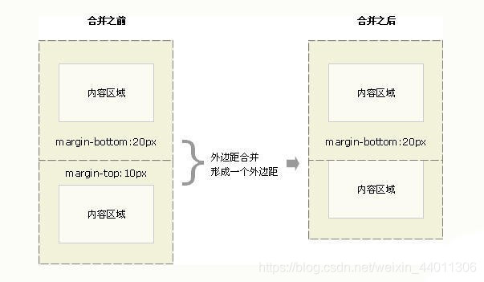
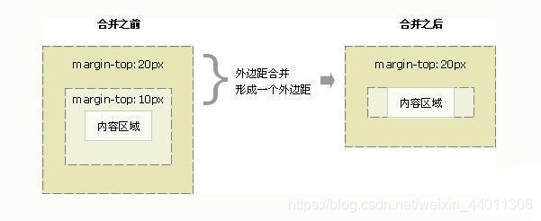
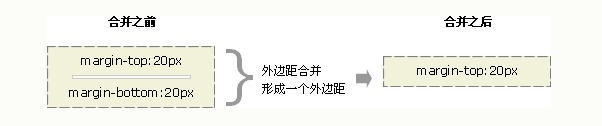
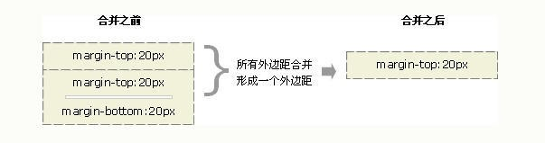
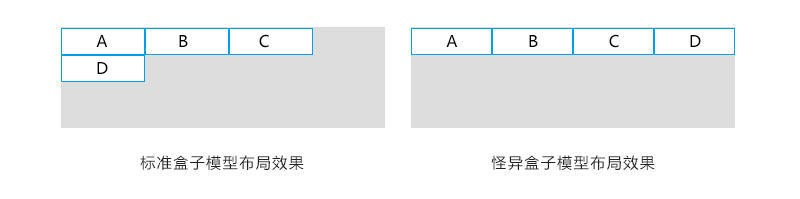

<!DOCTYPE html>


<html lang="zh-CN">
  

    <head>
      <meta charset="utf-8" />
        
      <meta name="description" content="小姚同学的学习笔记" />
      
      <meta
        name="viewport"
        content="width=device-width, initial-scale=1, maximum-scale=1"
      />
      <title>CSS_面试总结2 |  小姚同学今天学习了吗</title>
  <meta name="generator" content="hexo-theme-ayer">
      
      <link rel="shortcut icon" href="/favicon.ico" />
       
<link rel="stylesheet" href="/dist/main.css">

      
<link rel="stylesheet" href="/css/fonts/remixicon.css">

      
<link rel="stylesheet" href="/css/custom.css">
 
      <script src="https://cdn.staticfile.org/pace/1.2.4/pace.min.js"></script>
       
 

      <link
        rel="stylesheet"
        href="https://cdn.jsdelivr.net/npm/@sweetalert2/theme-bulma@5.0.1/bulma.min.css"
      />
      <script src="https://cdn.jsdelivr.net/npm/sweetalert2@11.0.19/dist/sweetalert2.min.js"></script>

      <!-- mermaid -->
      
      <style>
        .swal2-styled.swal2-confirm {
          font-size: 1.6rem;
        }
      </style>
    <link rel="alternate" href="/atom.xml" title="小姚同学今天学习了吗" type="application/atom+xml">
</head>
  </html>
</html>


<body>
  <div id="app">
    
      
    <main class="content on">
      <section class="outer">
  <article
  id="post-CSS-面试总结2"
  class="article article-type-post"
  itemscope
  itemprop="blogPost"
  data-scroll-reveal
>
  <div class="article-inner">
    
    <header class="article-header">
       
<h1 class="article-title sea-center" style="border-left:0" itemprop="name">
  CSS_面试总结2
</h1>
 

      
    </header>
     
    <div class="article-meta">
      <a href="/2022/04/21/CSS-%E9%9D%A2%E8%AF%95%E6%80%BB%E7%BB%932/" class="article-date">
  <time datetime="2022-04-21T12:55:18.000Z" itemprop="datePublished">2022-04-21</time>
</a> 
  <div class="article-category">
    <a class="article-category-link" href="/categories/CSS/">CSS</a>
  </div>
  
<div class="word_count">
    <span class="post-time">
        <span class="post-meta-item-icon">
            <i class="ri-quill-pen-line"></i>
            <span class="post-meta-item-text"> 字数统计:</span>
            <span class="post-count">4.2k</span>
        </span>
    </span>

    <span class="post-time">
        &nbsp; | &nbsp;
        <span class="post-meta-item-icon">
            <i class="ri-book-open-line"></i>
            <span class="post-meta-item-text"> 阅读时长≈</span>
            <span class="post-count">16 分钟</span>
        </span>
    </span>
</div>
 
    </div>
      
    <div class="tocbot"></div>


  
    <div class="article-entry" itemprop="articleBody">
       
  <h2 id="1-CSS选择器权重"><a href="#1-CSS选择器权重" class="headerlink" title="1 CSS选择器权重"></a>1 CSS选择器权重</h2><blockquote>
<p>选择器优先级： !important &gt; 行内样式 &gt; ID选择器 &gt; 类选择器 &gt; 标签选择器 &gt; 通配符 &gt; 继承 &gt; 浏览器默认属性</p>
</blockquote>
<table>
<thead>
<tr>
<th>选择器</th>
<th>权重</th>
<th>详情</th>
<th>使用方式</th>
</tr>
</thead>
<tbody><tr>
<td>!important</td>
<td>10000</td>
<td>拥有最高的优先级，可以覆盖父级样式</td>
<td><code>color:red !important;</code></td>
</tr>
<tr>
<td>行内样式</td>
<td>1000</td>
<td>写在标签style属性中的样式</td>
<td><code>&lt;div style=&quot;color:blue&quot;&gt;这是一个div元素&lt;/div&gt;</code></td>
</tr>
<tr>
<td>ID选择器</td>
<td>100</td>
<td>根据该元素的ID属性中的内容匹配元素</td>
<td><code>#content</code></td>
</tr>
<tr>
<td>类/伪类/属性选择器</td>
<td>10</td>
<td>根据元素属性进行匹配</td>
<td><code>content、:hover</code></td>
</tr>
<tr>
<td>标签/伪元素选择器</td>
<td>1</td>
<td>是指用HTML标签名作为选择器</td>
<td><code>div p </code></td>
</tr>
<tr>
<td>通配符选择器</td>
<td>0</td>
<td>* ，指给当前界面上所有的标签设置属性</td>
<td><code>*</code></td>
</tr>
</tbody></table>
<ul>
<li><p>子选择器：&gt;  (权重为0)</p>
</li>
<li><p>相邻选择器： +  (权重为0)</p>
<ul>
<li>在HTML代码中，（引用）相邻选择器元素<code>后面紧邻的</code>选择器元素，属性声明有效。（必须相邻才会有效，一个有效）</li>
</ul>
</li>
<li><p>同胞(兄弟)选择器： ~  (权重为0)</p>
<ul>
<li>在HTML代码中，（引用）兄弟选择器元素<code>后面所有的</code>选择器元素，属性声明均有效。（引用后面的均有效）</li>
</ul>
</li>
<li><p>属性选择器：属性选择器可以根据元素的属性及属性值来选择元素。</p>
<ul>
<li>eg：如果您希望把包含标题（title）的所有元素变为红色：<code>*[title] &#123;color:red;&#125;</code></li>
<li>属性选择器与类选择器的权重一样高</li>
</ul>
</li>
<li><p>伪类和伪元素的区别</p>
<ul>
<li>伪类作用对象：整个元素</li>
<li>伪元素作用： 元素的一部分</li>
</ul>
</li>
</ul>
<p> </p>
<p> </p>
<p>eg：</p>
<figure class="highlight html"><table><tr><td class="gutter"><pre><span class="line">1</span><br><span class="line">2</span><br><span class="line">3</span><br><span class="line">4</span><br><span class="line">5</span><br><span class="line">6</span><br><span class="line">7</span><br><span class="line">8</span><br><span class="line">9</span><br><span class="line">10</span><br><span class="line">11</span><br><span class="line">12</span><br><span class="line">13</span><br><span class="line">14</span><br><span class="line">15</span><br><span class="line">16</span><br><span class="line">17</span><br><span class="line">18</span><br><span class="line">19</span><br><span class="line">20</span><br><span class="line">21</span><br><span class="line">22</span><br><span class="line">23</span><br><span class="line">24</span><br><span class="line">25</span><br><span class="line">26</span><br><span class="line">27</span><br><span class="line">28</span><br><span class="line">29</span><br><span class="line">30</span><br><span class="line">31</span><br><span class="line">32</span><br><span class="line">33</span><br><span class="line">34</span><br><span class="line">35</span><br><span class="line">36</span><br><span class="line">37</span><br><span class="line">38</span><br><span class="line">39</span><br><span class="line">40</span><br><span class="line">41</span><br><span class="line">42</span><br><span class="line">43</span><br><span class="line">44</span><br><span class="line">45</span><br><span class="line">46</span><br><span class="line">47</span><br><span class="line">48</span><br><span class="line">49</span><br><span class="line">50</span><br><span class="line">51</span><br><span class="line">52</span><br><span class="line">53</span><br><span class="line">54</span><br><span class="line">55</span><br><span class="line">56</span><br><span class="line">57</span><br><span class="line">58</span><br><span class="line">59</span><br><span class="line">60</span><br><span class="line">61</span><br><span class="line">62</span><br><span class="line">63</span><br><span class="line">64</span><br><span class="line">65</span><br><span class="line">66</span><br></pre></td><td class="code"><pre><span class="line"><span class="comment">&lt;!-- 权重计算 --&gt;</span></span><br><span class="line"><span class="tag">&lt;<span class="name">style</span> <span class="attr">type</span>=<span class="string">&quot;text/css&quot;</span>&gt;</span><span class="language-css"></span></span><br><span class="line"><span class="language-css">    <span class="selector-id">#content</span> <span class="selector-tag">div</span><span class="selector-class">.main_content</span> <span class="selector-tag">h2</span>&#123;</span></span><br><span class="line"><span class="language-css">        <span class="attribute">color</span>:red;    </span></span><br><span class="line"><span class="language-css">    &#125;</span></span><br><span class="line"><span class="language-css">    <span class="selector-id">#content</span> <span class="selector-class">.main_content</span> <span class="selector-tag">h2</span>&#123;</span></span><br><span class="line"><span class="language-css">        <span class="attribute">color</span>:blue;</span></span><br><span class="line"><span class="language-css">    &#125;</span></span><br><span class="line"><span class="language-css"></span><span class="tag">&lt;/<span class="name">style</span>&gt;</span></span><br><span class="line">......</span><br><span class="line"><span class="tag">&lt;<span class="name">div</span> <span class="attr">id</span>=<span class="string">&quot;content&quot;</span>&gt;</span></span><br><span class="line">    <span class="tag">&lt;<span class="name">div</span> <span class="attr">class</span>=<span class="string">&quot;main_content&quot;</span>&gt;</span></span><br><span class="line">        <span class="tag">&lt;<span class="name">h2</span>&gt;</span>这是一个h2标题<span class="tag">&lt;/<span class="name">h2</span>&gt;</span></span><br><span class="line">    <span class="tag">&lt;/<span class="name">div</span>&gt;</span></span><br><span class="line"><span class="tag">&lt;/<span class="name">div</span>&gt;</span></span><br><span class="line"><span class="comment">&lt;!-- </span></span><br><span class="line"><span class="comment">第一条样式的权重计算： 100+1+10+1，结果为112；</span></span><br><span class="line"><span class="comment">第二条样式的权重计算： 100+10+1，结果为111；</span></span><br><span class="line"><span class="comment">h2标题的最终颜色为red</span></span><br><span class="line"><span class="comment">--&gt;</span></span><br><span class="line"></span><br><span class="line"><span class="comment">&lt;!-- 相邻选择器 --&gt;</span></span><br><span class="line"><span class="meta">&lt;!doctype <span class="keyword">html</span>&gt;</span></span><br><span class="line"><span class="tag">&lt;<span class="name">html</span>&gt;</span></span><br><span class="line"><span class="tag">&lt;<span class="name">head</span>&gt;</span></span><br><span class="line">    <span class="tag">&lt;<span class="name">meta</span> <span class="attr">charset</span>=<span class="string">&quot;utf-8&quot;</span>&gt;</span></span><br><span class="line">    <span class="tag">&lt;<span class="name">title</span>&gt;</span><span class="tag">&lt;/<span class="name">title</span>&gt;</span></span><br><span class="line">    <span class="tag">&lt;<span class="name">style</span>&gt;</span><span class="language-css"></span></span><br><span class="line"><span class="language-css">        <span class="selector-class">.br1</span> + <span class="selector-class">.br2</span> &#123;</span></span><br><span class="line"><span class="language-css">            <span class="attribute">color</span>: <span class="number">#f00</span>;</span></span><br><span class="line"><span class="language-css">        &#125;</span></span><br><span class="line"><span class="language-css">    </span><span class="tag">&lt;/<span class="name">style</span>&gt;</span></span><br><span class="line"><span class="tag">&lt;/<span class="name">head</span>&gt;</span></span><br><span class="line"><span class="tag">&lt;<span class="name">body</span>&gt;</span></span><br><span class="line"><span class="tag">&lt;<span class="name">p</span> <span class="attr">class</span>=<span class="string">&quot;br1&quot;</span>&gt;</span>我是p元素<span class="tag">&lt;/<span class="name">p</span>&gt;</span></span><br><span class="line"><span class="tag">&lt;<span class="name">p</span> <span class="attr">class</span>=<span class="string">&quot;br2&quot;</span>&gt;</span>我是p元素<span class="tag">&lt;/<span class="name">p</span>&gt;</span></span><br><span class="line"><span class="tag">&lt;<span class="name">p</span> <span class="attr">class</span>=<span class="string">&quot;br1&quot;</span>&gt;</span>我是p元素<span class="tag">&lt;/<span class="name">p</span>&gt;</span></span><br><span class="line"><span class="tag">&lt;<span class="name">p</span> <span class="attr">class</span>=<span class="string">&quot;br1&quot;</span>&gt;</span>我是p元素<span class="tag">&lt;/<span class="name">p</span>&gt;</span></span><br><span class="line"><span class="tag">&lt;<span class="name">p</span> <span class="attr">class</span>=<span class="string">&quot;br1&quot;</span>&gt;</span>我是p元素<span class="tag">&lt;/<span class="name">p</span>&gt;</span></span><br><span class="line"><span class="tag">&lt;<span class="name">p</span> <span class="attr">class</span>=<span class="string">&quot;br1&quot;</span>&gt;</span>我是p元素<span class="tag">&lt;/<span class="name">p</span>&gt;</span></span><br><span class="line"><span class="tag">&lt;/<span class="name">body</span>&gt;</span></span><br><span class="line"><span class="tag">&lt;/<span class="name">html</span>&gt;</span></span><br><span class="line"></span><br><span class="line"></span><br><span class="line"><span class="comment">&lt;!-- 兄弟选择器 --&gt;</span></span><br><span class="line"><span class="meta">&lt;!doctype <span class="keyword">html</span>&gt;</span></span><br><span class="line"><span class="tag">&lt;<span class="name">html</span>&gt;</span></span><br><span class="line"><span class="tag">&lt;<span class="name">head</span>&gt;</span></span><br><span class="line">    <span class="tag">&lt;<span class="name">meta</span> <span class="attr">charset</span>=<span class="string">&quot;utf-8&quot;</span>&gt;</span></span><br><span class="line">    <span class="tag">&lt;<span class="name">title</span>&gt;</span><span class="tag">&lt;/<span class="name">title</span>&gt;</span></span><br><span class="line">    <span class="tag">&lt;<span class="name">style</span>&gt;</span><span class="language-css"></span></span><br><span class="line"><span class="language-css">        <span class="selector-class">.br2</span> ~ <span class="selector-class">.br1</span> &#123;</span></span><br><span class="line"><span class="language-css">            <span class="attribute">color</span>: <span class="number">#f00</span>;</span></span><br><span class="line"><span class="language-css">        &#125;</span></span><br><span class="line"><span class="language-css">    </span><span class="tag">&lt;/<span class="name">style</span>&gt;</span></span><br><span class="line"><span class="tag">&lt;/<span class="name">head</span>&gt;</span></span><br><span class="line"><span class="tag">&lt;<span class="name">body</span>&gt;</span></span><br><span class="line"><span class="tag">&lt;<span class="name">p</span> <span class="attr">class</span>=<span class="string">&quot;br1&quot;</span>&gt;</span>我是p元素<span class="tag">&lt;/<span class="name">p</span>&gt;</span></span><br><span class="line"><span class="tag">&lt;<span class="name">p</span> <span class="attr">class</span>=<span class="string">&quot;br2&quot;</span>&gt;</span>我是p元素<span class="tag">&lt;/<span class="name">p</span>&gt;</span></span><br><span class="line"><span class="tag">&lt;<span class="name">p</span> <span class="attr">class</span>=<span class="string">&quot;br1&quot;</span>&gt;</span>我是p元素<span class="tag">&lt;/<span class="name">p</span>&gt;</span></span><br><span class="line"><span class="tag">&lt;<span class="name">p</span> <span class="attr">class</span>=<span class="string">&quot;br1&quot;</span>&gt;</span>我是p元素<span class="tag">&lt;/<span class="name">p</span>&gt;</span></span><br><span class="line"><span class="tag">&lt;<span class="name">p</span> <span class="attr">class</span>=<span class="string">&quot;br1&quot;</span>&gt;</span>我是p元素<span class="tag">&lt;/<span class="name">p</span>&gt;</span></span><br><span class="line"><span class="tag">&lt;<span class="name">p</span> <span class="attr">class</span>=<span class="string">&quot;br1&quot;</span>&gt;</span>我是p元素<span class="tag">&lt;/<span class="name">p</span>&gt;</span></span><br><span class="line"><span class="tag">&lt;/<span class="name">body</span>&gt;</span></span><br><span class="line"><span class="tag">&lt;/<span class="name">html</span>&gt;</span></span><br><span class="line"></span><br></pre></td></tr></table></figure>

<h2 id="2-CSS单位"><a href="#2-CSS单位" class="headerlink" title="2 CSS单位"></a>2 CSS单位</h2><h3 id="2-1-相对单位"><a href="#2-1-相对单位" class="headerlink" title="2.1 相对单位"></a>2.1 相对单位</h3><blockquote>
<p>相对单位规定相对于另一个长度属性的长度。它在不同渲染介质之间缩放表现更好。<br></p>
</blockquote>
<h4 id="2-1-1-em和rem"><a href="#2-1-1-em和rem" class="headerlink" title="2.1.1 em和rem"></a>2.1.1 em和rem</h4><blockquote>
<p>em : 相对于元素的字体大小.</p>
</blockquote>
<ul>
<li>em：如果自身元素未设置字体大小，那么其根据父元素的字体大小进行计算；如果自身元素设置了字体大小，则基于自身的字体大小进行计算。</li>
<li>em的值不是固定的</li>
</ul>
<blockquote>
<p>rem : 相对于根元素的字体大小计算。</p>
</blockquote>
<ul>
<li><p>rem在处理小数的时候会有误差。</p>
</li>
<li><p>不支持iframe，并且这里存在一个理念问题，大屏是为了更大更清晰，还是为了承载更多内容。</p>
</li>
<li><p><code>em</code>与<code>rem</code>的选择情况：</p>
<ul>
<li>两者在客户端中计算出来的样式都会以px的形式显示；</li>
<li><code>rem</code>是<code>相对根元素</code>html的字体大小计算，<code>em</code>是<code>相对于元素</code>的字体大小进行计算；</li>
<li>当需要根据<code>浏览器的font-size设置缩放</code>时，使用<code>rem</code>；</li>
<li>使用em应该根据组件的font-size来定；</li>
<li>rem可以从浏览器字体设置中继承font-size值；</li>
<li>em可能受任何继承过来的父元素font-size的影响。</li>
</ul>
</li>
</ul>
<h4 id="2-1-2-vh和vm，vmin和vmax"><a href="#2-1-2-vh和vm，vmin和vmax" class="headerlink" title="2.1.2 vh和vm，vmin和vmax"></a>2.1.2 vh和vm，vmin和vmax</h4><ul>
<li>vw：视窗宽度的百分比；</li>
<li>vh：视窗高度的百分比；</li>
<li>vmax：较大的 vh 和 vw；</li>
<li>vmin：较小的 vh 和 vw。</li>
</ul>
<p>eg:</p>
<ul>
<li>若一个浏览器高度为500px，宽度为1200px，<ul>
<li>1vh = 5px;</li>
<li>1vw = 12px;</li>
<li>1vmin = 5px;</li>
<li>1vmax = 12px.</li>
</ul>
</li>
</ul>
<h3 id="2-2-绝对单位"><a href="#2-2-绝对单位" class="headerlink" title="2.2 绝对单位"></a>2.2 绝对单位</h3><blockquote>
<p>绝对单位是固定的，用任何一个绝对长度表示的长度都将恰好显示为这个尺寸。</p>
</blockquote>
<ul>
<li>不建议在屏幕上使用绝对长度单位，因为屏幕尺寸变化较大。</li>
</ul>
<p></p>
<h3 id="2-3-百分比单位"><a href="#2-3-百分比单位" class="headerlink" title="2.3 百分比单位"></a>2.3 百分比单位</h3><ul>
<li>百分比（%）是较常用的单位之一，所有接受长度值的属性都可以使用百分比单位。但是不同属性使用该单位的效果可能并不一样。但是都需要有一个参照值，也就是说百分比值是一个相对的值。 ​</li>
</ul>
<p></p>
<h3 id="2-4-角度单位-​"><a href="#2-4-角度单位-​" class="headerlink" title="2.4 角度单位 ​"></a>2.4 角度单位 ​</h3><p></p>
<h2 id="3-盒子模型"><a href="#3-盒子模型" class="headerlink" title="3 盒子模型"></a>3 盒子模型</h2><h3 id="前言"><a href="#前言" class="headerlink" title="前言"></a>前言</h3><ul>
<li>盒子中的区域<ul>
<li>一个盒子有5个重要属性： <code>width(宽度)</code>、<code>height(高度)</code>、<code>padding(内边距)</code>、<code>border(边框)</code>、<code>margin(外边距)</code></li>
</ul>
</li>
</ul>
<h3 id="3-1-标准盒模型"><a href="#3-1-标准盒模型" class="headerlink" title="3.1 标准盒模型"></a>3.1 标准盒模型</h3><p></p>
<ul>
<li><p>标准盒子模型中“盒子”尺寸计算公式为：</p>
<ul>
<li><code>盒子实际尺寸</code> = <code>内容尺寸</code> + <code>内边距</code> + <code>边框宽度</code></li>
</ul>
</li>
<li><p>外边距合并问题：</p>
<ul>
<li>发生条件： 只有普通文档流中的块级元素的垂直外边距才会发生外边距合并。</li>
<li>外边距合并：是指当两个垂直外边距相遇时，它们将形成一个外边距。合并后的外边距 = 两个发生合并外边距的高度中的较大值</li>
<li>合并情况<ul>
<li>当两个元素均有外边距时，它们将合成一个外边距，高度为元素外边距较大的那个值<br></li>
<li>当一个元素包含在另一个元素中，它们的上下外边距也会合并。<br></li>
<li>外边距也可以和自身发生合并。当一个空元素有外边距但是没有边框或填充时，上下外边距会合并。<br></li>
<li>在自身合并的这种情况下，如果遇到另一个元素的外边距，还是会发生合并。<br></li>
</ul>
</li>
</ul>
</li>
</ul>
<h3 id="3-2-怪异盒模型"><a href="#3-2-怪异盒模型" class="headerlink" title="3.2 怪异盒模型"></a>3.2 怪异盒模型</h3><p></p>
<ul>
<li><p>怪异盒模型与标准盒模型的区别：</p>
<ul>
<li>IE盒子模型的<code>content部分</code>包含了<code>border</code>和<code>padding</code>。</li>
<li>在<code>标准盒子模型</code>中：<code>width</code> 和 <code>height</code> 指的是<strong>内容区域的宽度和高度</strong>。增加内边距、边框和外边距不会影响内容区域的尺寸，但是会增加元素框的总尺寸。</li>
<li>在<code>IE盒子模型</code>中：<code>width</code> 和 <code>height</code> 指的是<code>内容区域 + border + padding</code>的<strong>宽度和高度</strong>。</li>
</ul>
</li>
<li><p>IE盒模型使用设置：</p>
<ul>
<li><code>box-sizing: border-box;</code></li>
<li>需要注意的是该样式存在浏览器兼容性问题，使用时需要添加浏览器内核前缀。</li>
</ul>
</li>
<li><p>IE盒模型使用优势：</p>
<ul>
<li>IE盒模型对于百分比宽度布局有明显的便捷性，在布局时无需再去格外计算元素的内边距及边框。<br></li>
</ul>
</li>
</ul>
<h3 id="3-3-flex盒模型"><a href="#3-3-flex盒模型" class="headerlink" title="3.3 flex盒模型"></a>3.3 flex盒模型</h3><h4 id="3-3-1-Flex布局是什么？"><a href="#3-3-1-Flex布局是什么？" class="headerlink" title="3.3.1 Flex布局是什么？"></a>3.3.1 Flex布局是什么？</h4><blockquote>
<p>Flexible box，弹性布局，用来为盒子模型提供最大的灵活性。</p>
</blockquote>
<ul>
<li>任何一个容器、行内元素都可以设置为flex布局。</li>
<li><code>webkit内核</code>的浏览器，必须加<code>-webkit</code>前缀。</li>
<li>注意，在设置flex布局之后，子元素的<code>float</code>、<code>clear</code>和<code>vertical-align</code>属性都将<code>失效</code>。</li>
</ul>
<figure class="highlight css"><table><tr><td class="gutter"><pre><span class="line">1</span><br><span class="line">2</span><br><span class="line">3</span><br><span class="line">4</span><br><span class="line">5</span><br><span class="line">6</span><br><span class="line">7</span><br><span class="line">8</span><br><span class="line">9</span><br><span class="line">10</span><br></pre></td><td class="code"><pre><span class="line"><span class="selector-class">.box</span>&#123;</span><br><span class="line">  <span class="attribute">display</span>: flex;</span><br><span class="line">&#125;</span><br><span class="line"><span class="selector-class">.box1</span>&#123;</span><br><span class="line">  <span class="attribute">display</span>: inline-flex;</span><br><span class="line">&#125;</span><br><span class="line"><span class="selector-class">.box2</span>&#123;</span><br><span class="line">  <span class="attribute">display</span>: -webkit-flex; <span class="comment">/* Safari */</span></span><br><span class="line">  <span class="attribute">display</span>: flex;</span><br><span class="line">&#125;</span><br></pre></td></tr></table></figure>
<p></p>
<h4 id="3-3-2-基本概念"><a href="#3-3-2-基本概念" class="headerlink" title="3.3.2 基本概念"></a>3.3.2 基本概念</h4><ul>
<li><p>容器：采用 Flex 布局的元素，称为 Flex 容器</p>
</li>
<li><p>项目：它的所有子元素自动成为容器成员，称为 Flex 项目（flex item），简称”项目”。</p>
</li>
<li><p>容器存在两根轴：</p>
<ul>
<li>水平主轴：main axis </li>
<li>垂直交叉轴： cross axis</li>
</ul>
</li>
<li><p>容器中的项目默认沿主轴排列。</p>
</li>
</ul>
<h4 id="3-3-3-容器的属性"><a href="#3-3-3-容器的属性" class="headerlink" title="3.3.3 容器的属性"></a>3.3.3 容器的属性</h4><table>
<thead>
<tr>
<th>属性</th>
<th>定义</th>
<th>使用</th>
</tr>
</thead>
<tbody><tr>
<td><code>flex-direction</code></td>
<td>决定主轴方向</td>
<td><code> row /row-reverse /column /column-reverse</code></td>
</tr>
<tr>
<td><code>flex-wrap</code></td>
<td>决定是否换行，如何换行</td>
<td><code> nowrap /wrap /wrap-reverse</code></td>
</tr>
<tr>
<td><code>flex-flow</code></td>
<td><code>flex-direction</code>和<code>flex-wrap</code>的简写形式</td>
<td><code>  &lt;flex-direction&gt; // &lt;flex-wrap&gt;</code></td>
</tr>
<tr>
<td><code>justify-content</code></td>
<td>项目在主轴上的对齐方式</td>
<td><code>flex-start /flex-end / center / space-between / space-around</code></td>
</tr>
<tr>
<td><code>align-items</code></td>
<td>项目在交叉轴上的排列方式</td>
<td><code>flex-start / flex-end / center / baseline / stretch</code></td>
</tr>
<tr>
<td><code>align-content</code></td>
<td>多根轴线的对齐方式</td>
<td><code>flex-start /flex-end /center / space-between /space-around /stretch</code></td>
</tr>
</tbody></table>
<h5 id="3-3-3-1-flex-direction"><a href="#3-3-3-1-flex-direction" class="headerlink" title="3.3.3.1 flex-direction"></a>3.3.3.1 <code>flex-direction</code></h5><ul>
<li>该属性决定主轴的方向（即内容的排列方向）</li>
<li>属性值：<ul>
<li><code>row</code>（默认值）： 水平向右；</li>
<li><code>row-reverse</code>： 水平向左；</li>
<li><code>column</code>： 垂直向下；</li>
<li><code>column-reverse</code>： 垂直向上。</li>
</ul>
</li>
</ul>
<figure class="highlight css"><table><tr><td class="gutter"><pre><span class="line">1</span><br><span class="line">2</span><br><span class="line">3</span><br></pre></td><td class="code"><pre><span class="line"><span class="selector-class">.box</span> &#123;</span><br><span class="line">  <span class="attribute">flex-direction</span>: row | row-reverse | column | column-reverse;</span><br><span class="line">&#125;</span><br></pre></td></tr></table></figure>

<h5 id="3-3-3-2-flex-wrap"><a href="#3-3-3-2-flex-wrap" class="headerlink" title="3.3.3.2 flex-wrap"></a>3.3.3.2 <code>flex-wrap</code></h5><ul>
<li>该属性定义，当一行显示不下所有项目时是否换行，如何换行。(交叉轴方向决定项目换行方向)</li>
<li>属性值：<ul>
<li><code>nowrap</code>(默认值): <code>不换行</code> ；</li>
<li><code>wrap</code>：换行，第一行在<code>上</code>方；</li>
<li><code>wrap-reverse</code>： 换行，第一行在<code>下</code>方。</li>
</ul>
</li>
</ul>
<figure class="highlight css"><table><tr><td class="gutter"><pre><span class="line">1</span><br><span class="line">2</span><br><span class="line">3</span><br></pre></td><td class="code"><pre><span class="line"><span class="selector-class">.box</span> &#123;</span><br><span class="line">  <span class="attribute">flex-wrap</span>: nowrap | wrap | wrap-reverse;</span><br><span class="line">&#125;</span><br></pre></td></tr></table></figure>

<h5 id="3-3-3-3-flex-flow"><a href="#3-3-3-3-flex-flow" class="headerlink" title="3.3.3.3 flex-flow"></a>3.3.3.3 <code>flex-flow</code></h5><ul>
<li>该属性是<code>flex-direction</code>属性和<code>flex-wrap</code>属性的简写形式，默认值为<code>row nowrap</code>。</li>
</ul>
<figure class="highlight css"><table><tr><td class="gutter"><pre><span class="line">1</span><br><span class="line">2</span><br><span class="line">3</span><br></pre></td><td class="code"><pre><span class="line"><span class="selector-class">.box</span> &#123;</span><br><span class="line">  <span class="attribute">flex-flow</span>: &lt;flex-direction&gt; || &lt;flex-wrap&gt;;</span><br><span class="line">&#125;</span><br></pre></td></tr></table></figure>

<h5 id="3-3-3-4-justify-content"><a href="#3-3-3-4-justify-content" class="headerlink" title="3.3.3.4 justify-content"></a>3.3.3.4 <code>justify-content</code></h5><ul>
<li>该属性定义了项目在主轴上的对齐方式。</li>
<li>属性值（具体对齐方式与轴的方向有关，假设主轴的方向为从左到右）<ul>
<li><code>flex-start</code>（默认值）：左对齐；</li>
<li><code>flex-end</code>：右对齐；</li>
<li><code>center</code>： 居中；</li>
<li><code>space-between</code>：两端对齐，项目之间的间隔都相等；</li>
<li><code>space-around</code>：每个项目两侧的间隔相等，所以，项目之间的间隔比项目与边框的间隔大一倍。</li>
</ul>
</li>
</ul>
<figure class="highlight css"><table><tr><td class="gutter"><pre><span class="line">1</span><br><span class="line">2</span><br><span class="line">3</span><br></pre></td><td class="code"><pre><span class="line"><span class="selector-class">.box</span> &#123;</span><br><span class="line">  <span class="attribute">justify-content</span>: flex-start | flex-end | center | space-between | space-around;</span><br><span class="line">&#125;</span><br></pre></td></tr></table></figure>

<h5 id="3-3-3-5-align-items"><a href="#3-3-3-5-align-items" class="headerlink" title="3.3.3.5 align-items"></a>3.3.3.5 <code>align-items</code></h5><ul>
<li>该属性定义了项目在交叉轴上如何对齐。</li>
<li>属性值（具体对齐方式与交叉轴方向有关，假设交叉轴从上到下）<ul>
<li><code>flex-start</code>：交叉轴的起点对齐。</li>
<li><code>flex-end</code>：交叉轴的终点对齐。</li>
<li><code>center</code>：交叉轴的中点对齐。</li>
<li><code>baseline</code>: 项目的第一行文字的基线对齐。</li>
<li><code>stretch</code>（默认值）：如果项目未设置高度或设为auto，将占满整个容器的高度。</li>
</ul>
</li>
</ul>
<figure class="highlight css"><table><tr><td class="gutter"><pre><span class="line">1</span><br><span class="line">2</span><br><span class="line">3</span><br></pre></td><td class="code"><pre><span class="line"><span class="selector-class">.box</span> &#123;</span><br><span class="line">  <span class="attribute">align-items</span>: flex-start | flex-end | center | baseline | stretch;</span><br><span class="line">&#125;</span><br></pre></td></tr></table></figure>

<h5 id="3-3-3-6-align-content"><a href="#3-3-3-6-align-content" class="headerlink" title="3.3.3.6 align-content"></a>3.3.3.6 <code>align-content</code></h5><ul>
<li>该属性定义多根轴线的对齐方式，如果项目只有一根轴线，则不起作用。（沿着交叉轴方向的每一行，在容器中如何分布）</li>
<li>属性值<ul>
<li><code>flex-start</code>：与交叉轴的起点对齐。</li>
<li><code>flex-end</code>：与交叉轴的终点对齐。</li>
<li><code>center</code>：与交叉轴的中点对齐。</li>
<li><code>space-between</code>：与交叉轴两端对齐，轴线之间的间隔平均分布。</li>
<li><code>space-around</code>：每根轴线两侧的间隔都相等。所以，轴线之间的间隔比轴线与边框的间隔大一倍。</li>
<li><code>stretch</code>（默认值）：轴线占满整个交叉轴。</li>
</ul>
</li>
</ul>
<figure class="highlight css"><table><tr><td class="gutter"><pre><span class="line">1</span><br><span class="line">2</span><br><span class="line">3</span><br></pre></td><td class="code"><pre><span class="line"><span class="selector-class">.box</span> &#123;</span><br><span class="line">  <span class="attribute">align-content</span>: flex-start | flex-end | center | space-between | space-around | stretch;</span><br><span class="line">&#125;</span><br></pre></td></tr></table></figure>


<h4 id="3-3-4-项目属性"><a href="#3-3-4-项目属性" class="headerlink" title="3.3.4 项目属性"></a>3.3.4 项目属性</h4><table>
<thead>
<tr>
<th>属性</th>
<th>定义</th>
<th>使用</th>
</tr>
</thead>
<tbody><tr>
<td><code>order</code></td>
<td>定义项目的排列属性，数值越小，排列越靠前，默认为0</td>
<td><code>order: &lt;integer&gt;;</code></td>
</tr>
<tr>
<td><code>flex-grow</code></td>
<td>定义项目放大比例，默认为0，即如果存在剩余空间也不放大</td>
<td><code>flex-grow: &lt;number&gt;;</code></td>
</tr>
<tr>
<td><code>flex-shrink</code></td>
<td>定义项目的缩小比例，默认为1，即如果空间不足，项目缩小</td>
<td><code>flex-shrink: &lt;number&gt;;</code></td>
</tr>
<tr>
<td><code>flex-basis</code></td>
<td>定义在分配多余空间之前，项目占据的主轴空间，默认为auto</td>
<td><code>flex-basis: &lt;length&gt;/auto;</code></td>
</tr>
<tr>
<td><code>flex</code></td>
<td>放大，缩小和分配剩余空间的简写，默认值为<code> 0 1 auto</code></td>
<td><code> flex: none / [ &lt;&#39;flex-grow&#39;&gt; &lt;&#39;flex-shrink&#39;&gt;? // &lt;&#39;flex-basis&#39;&gt; ]</code></td>
</tr>
<tr>
<td><code>align-self</code></td>
<td>设置某个单个项目的对齐方式</td>
<td><code>align-self: auto /flex-start /flex-end /center /baseline /stretch;</code></td>
</tr>
</tbody></table>
<ul>
<li><p><code>flex-grow属性</code>：如果所有项目的flex-grow属性都为1，则它们将等分剩余空间（如果有的话）；如果一个项目的flex-grow属性为2，其他项目都为1，则前者占据的剩余空间将比其他项多一倍。</p>
</li>
<li><p><code>flex-shrink属性</code>：如果所有项目的flex-shrink属性都为1，当空间不足时，都将等比例缩小。如果一个项目的flex-shrink属性为0，其他项目都为1，则空间不足时，前者不缩小。<strong>负值对该属性无效</strong>。</p>
</li>
<li><p><code>flex-basis属性</code>: 定义了在分配多余空间之前，项目占据的主轴空间（main size）。浏览器根据这个属性，计算主轴是否有多余空间。它的默认值为auto，即项目的本来大小。</p>
</li>
<li><p><code>flex属性</code>：该属性有两个快捷值：<code>auto</code> <code>(1 1 auto)</code> 和 <code>none</code> <code>(0 0 auto)</code>。建议优先使用这个属性，而不是单独写三个分离的属性，因为浏览器会推算相关值。</p>
</li>
<li><p><code>align-self属性</code>： 允许单个项目有与其他项目不一样的对齐方式，可覆盖align-items属性。默认值为<code>auto</code>，表示继承父元素的align-items属性，如果没有父元素，则等同于stretch。</p>
</li>
<li><p><a target="_blank" rel="noopener" href="https://www.ruanyifeng.com/blog/2015/07/flex-grammar.html">CSS-Flex布局基础-阮一峰老师</a></p>
</li>
<li><p><a target="_blank" rel="noopener" href="https://www.ruanyifeng.com/blog/2015/07/flex-examples.html">CSS-Flex布局实例-阮一峰老师</a></p>
</li>
</ul>
<h2 id="4-css动画"><a href="#4-css动画" class="headerlink" title="4 css动画"></a>4 css动画</h2><h2 id="5-经典布局方案"><a href="#5-经典布局方案" class="headerlink" title="5 经典布局方案"></a>5 经典布局方案</h2><h2 id="6-其他"><a href="#6-其他" class="headerlink" title="6 其他"></a>6 其他</h2><h3 id="6-1-CSS变量"><a href="#6-1-CSS变量" class="headerlink" title="6.1 CSS变量"></a>6.1 CSS变量</h3><h4 id="6-1-1-变量的声明"><a href="#6-1-1-变量的声明" class="headerlink" title="6.1.1 变量的声明"></a>6.1.1 变量的声明</h4><ul>
<li><code>CSS变量</code>(CSS variable)又叫做<code>CSS 自定义属性</code>。在声明变量的时候，在变量名前加两根连词线（<code>--</code>）.</li>
<li>变量名大小写敏感，<code>--header-color</code>和<code>--Header-Color</code>是两个不同变量。</li>
<li>各种值都可以放入CSS变量。</li>
</ul>
<figure class="highlight css"><table><tr><td class="gutter"><pre><span class="line">1</span><br><span class="line">2</span><br><span class="line">3</span><br><span class="line">4</span><br></pre></td><td class="code"><pre><span class="line"><span class="selector-tag">body</span> &#123;</span><br><span class="line">  <span class="attr">--foo</span>: <span class="number">#7F583F</span>;</span><br><span class="line">  <span class="attr">--bar</span>: <span class="number">#F7EFD2</span>;</span><br><span class="line">&#125;</span><br></pre></td></tr></table></figure>

<h4 id="6-1-2-var-函数"><a href="#6-1-2-var-函数" class="headerlink" title="6.1.2 var()函数"></a>6.1.2 var()函数</h4><ul>
<li><p>作用：var()函数用于读取变量。</p>
</li>
<li><p>变量值只能用作属性值，不能用作属性名。</p>
<figure class="highlight css"><table><tr><td class="gutter"><pre><span class="line">1</span><br><span class="line">2</span><br><span class="line">3</span><br><span class="line">4</span><br></pre></td><td class="code"><pre><span class="line"><span class="selector-tag">a</span> &#123;</span><br><span class="line">  <span class="attribute">color</span>: <span class="built_in">var</span>(--foo);</span><br><span class="line">  <span class="attribute">text-decoration-color</span>: <span class="built_in">var</span>(--bar);</span><br><span class="line">&#125;</span><br></pre></td></tr></table></figure></li>
<li><p>var()函数可以使用第二个参数，表示变量的默认值。若该变量不存在，则会使用该默认值。第二个参数不处理内部的逗号和空格，逗号和空格都将作为参数的一部分。</p>
<figure class="highlight css"><table><tr><td class="gutter"><pre><span class="line">1</span><br><span class="line">2</span><br><span class="line">3</span><br><span class="line">4</span><br><span class="line">5</span><br></pre></td><td class="code"><pre><span class="line"><span class="selector-tag">p</span>&#123;</span><br><span class="line">  <span class="attribute">color</span>: <span class="built_in">var</span>(--foo, <span class="number">#7F583F</span>);</span><br><span class="line">  <span class="attribute">font</span>: <span class="built_in">var</span>(--font-stack, <span class="string">&quot;Roboto&quot;</span>, <span class="string">&quot;Helvetica&quot;</span>);</span><br><span class="line">  <span class="attribute">font</span>: <span class="built_in">var</span>(--pad, <span class="number">10px</span> <span class="number">15px</span> <span class="number">20px</span>);</span><br><span class="line">&#125;</span><br></pre></td></tr></table></figure></li>
<li><p>var()函数还可以用在变量的声明。</p>
<figure class="highlight css"><table><tr><td class="gutter"><pre><span class="line">1</span><br><span class="line">2</span><br><span class="line">3</span><br><span class="line">4</span><br></pre></td><td class="code"><pre><span class="line"><span class="selector-pseudo">:root</span> &#123;</span><br><span class="line">  <span class="attr">--primary-color</span>: red;</span><br><span class="line">  <span class="attr">--logo-text</span>: <span class="built_in">var</span>(--primary-color);</span><br><span class="line">&#125;</span><br></pre></td></tr></table></figure></li>
</ul>
<h4 id="6-1-3-CSS变量的作用及用法"><a href="#6-1-3-CSS变量的作用及用法" class="headerlink" title="6.1.3 CSS变量的作用及用法"></a>6.1.3 CSS变量的作用及用法</h4><ol>
<li><p>什么是CSS变量？</p>
<ul>
<li>CSS变量当前有两种形式：<ul>
<li>变量，拥有合法标识符和合法的值。可以使用var()函数来使用变量。</li>
<li>自定义属性。</li>
</ul>
</li>
</ul>
</li>
<li><p>为什么要使用css变量</p>
<ul>
<li>答：在构件大型网站时，通常会面对可维护性的挑战。在网页中使用的css数量时非常庞大的。在这种情况下维护或修改一个配色方案，都会称为一个复杂的问题。这时，使用CSS变量为我们带来了一些预处理的便利，不需要额外的编译工作。</li>
<li>减少样式重复定义，方便维护，提高可读性；</li>
<li>增加预编译的便利性；</li>
<li>变量名称本身就包含了语义信息，CSS文件将会变得易读和理解；</li>
<li>可在运行时控制css逻辑，与less/sass相比，更加灵活，因为它很容易通过js来控制；</li>
<li>可以减少js对dom的介入，制作性能更高的动画；</li>
<li>配合conent等通过css给js传参，得到一些通过js难以获取的参数。</li>
</ul>
</li>
</ol>
<ul>
<li><a target="_blank" rel="noopener" href="https://www.ruanyifeng.com/blog/2017/05/css-variables.html">CSS变量教程 - 阮一峰</a></li>
<li><a target="_blank" rel="noopener" href="https://blog.csdn.net/shkstart/article/details/107709997">转载-CSS变量</a></li>
</ul>
<h3 id="6-2-styled-component"><a href="#6-2-styled-component" class="headerlink" title="6.2 styled-component"></a>6.2 styled-component</h3><h3 id="6-3-CSS样式抖动"><a href="#6-3-CSS样式抖动" class="headerlink" title="6.3 CSS样式抖动"></a>6.3 CSS样式抖动</h3><ul>
<li><p>前端开发时，出现页面抖动的原因？</p>
<ul>
<li>没有指定元素具体高度和宽度，例如数据还没加载进来的时候元素高度为100px，数据加载进来后元素被撑开，所以出现了抖动。</li>
<li>在使用css3动画后，经常会出现文字抖动情况，原因是元素高度塌陷。</li>
<li><a target="_blank" rel="noopener" href="https://blog.csdn.net/SiShen654/article/details/118642780">css解决文字抖动问题</a></li>
</ul>
</li>
<li><p>CSS Shake：是一个使用CSS3实现的动画样式，使用SASS编写的，利用它可实现多种不同样式的抖动效果。</p>
<ul>
<li>网址：<a target="_blank" rel="noopener" href="https://www.webhek.com/post/css-shake.html">CSS-shake样式抖动</a></li>
</ul>
</li>
</ul>
<h3 id="6-4-使用CSS实现网页的黑暗模式"><a href="#6-4-使用CSS实现网页的黑暗模式" class="headerlink" title="6.4 使用CSS实现网页的黑暗模式"></a>6.4 使用CSS实现网页的黑暗模式</h3><figure class="highlight css"><table><tr><td class="gutter"><pre><span class="line">1</span><br><span class="line">2</span><br><span class="line">3</span><br></pre></td><td class="code"><pre><span class="line"><span class="selector-tag">html</span><span class="selector-attr">[theme=<span class="string">&quot;dark-mode&quot;</span>]</span> &#123;</span><br><span class="line">  <span class="attribute">filter</span>: <span class="built_in">invert</span>(<span class="number">1</span>) <span class="built_in">hue-rotate</span>(<span class="number">180deg</span>); </span><br><span class="line">&#125;</span><br></pre></td></tr></table></figure>
<ul>
<li><p>CSS filter属性: 将模糊或颜色转移等图形效果应用到元素上。 滤镜通常用于调整图像、背景和边框的渲染。</p>
</li>
<li><p>黑暗模式使用两个滤镜：</p>
<ul>
<li>invert滤镜：可以帮助反转应用程序的颜色方案。</li>
<li>hue-rotate滤镜：可以帮助处理所有其他非黑白的颜色。将色调旋转180°，确保应用程序的颜色主题不会改变。而只是减弱他的颜色。</li>
</ul>
</li>
<li><p><a target="_blank" rel="noopener" href="https://segmentfault.com/a/1190000023598551">CSS暗黑模式</a></p>
</li>
</ul>
 
      <!-- reward -->
      
      <div id="reword-out">
        <div id="reward-btn">
          打赏
        </div>
      </div>
      
    </div>
    

    <!-- copyright -->
    
    <div class="declare">
      <ul class="post-copyright">
        <li>
          <i class="ri-copyright-line"></i>
          <strong>版权声明： </strong>
          
          本博客所有文章除特别声明外，著作权归作者所有。转载请注明出处！
          
        </li>
      </ul>
    </div>
    
    <footer class="article-footer">
       
<div class="share-btn">
      <span class="share-sns share-outer">
        <i class="ri-share-forward-line"></i>
        分享
      </span>
      <div class="share-wrap">
        <i class="arrow"></i>
        <div class="share-icons">
          
          <a class="weibo share-sns" href="javascript:;" data-type="weibo">
            <i class="ri-weibo-fill"></i>
          </a>
          <a class="weixin share-sns wxFab" href="javascript:;" data-type="weixin">
            <i class="ri-wechat-fill"></i>
          </a>
          <a class="qq share-sns" href="javascript:;" data-type="qq">
            <i class="ri-qq-fill"></i>
          </a>
          <a class="douban share-sns" href="javascript:;" data-type="douban">
            <i class="ri-douban-line"></i>
          </a>
          <!-- <a class="qzone share-sns" href="javascript:;" data-type="qzone">
            <i class="icon icon-qzone"></i>
          </a> -->
          
          <a class="facebook share-sns" href="javascript:;" data-type="facebook">
            <i class="ri-facebook-circle-fill"></i>
          </a>
          <a class="twitter share-sns" href="javascript:;" data-type="twitter">
            <i class="ri-twitter-fill"></i>
          </a>
          <a class="google share-sns" href="javascript:;" data-type="google">
            <i class="ri-google-fill"></i>
          </a>
        </div>
      </div>
</div>

<div class="wx-share-modal">
    <a class="modal-close" href="javascript:;"><i class="ri-close-circle-line"></i></a>
    <p>扫一扫，分享到微信</p>
    <div class="wx-qrcode">
      
    </div>
</div>

<div id="share-mask"></div>  
  <ul class="article-tag-list" itemprop="keywords"><li class="article-tag-list-item"><a class="article-tag-list-link" href="/tags/%E9%9D%A2%E8%AF%95/" rel="tag">面试</a></li></ul>

    </footer>
  </div>

   
  <nav class="article-nav">
    
      <a href="/2022/04/27/CSS-%E6%A0%B7%E5%BC%8F%E7%BB%83%E4%B9%A0/" class="article-nav-link">
        <strong class="article-nav-caption">上一篇</strong>
        <div class="article-nav-title">
          
            CSS-样式练习
          
        </div>
      </a>
    
    
      <a href="/2022/04/18/%E5%85%B6%E4%BB%96/" class="article-nav-link">
        <strong class="article-nav-caption">下一篇</strong>
        <div class="article-nav-title">其他</div>
      </a>
    
  </nav>

  
   
    
    <script src="https://cdn.staticfile.org/twikoo/1.4.18/twikoo.all.min.js"></script>
    <div id="twikoo" class="twikoo"></div>
    <script>
        twikoo.init({
            envId: ""
        })
    </script>
 
</article>

</section>
      <footer class="footer">
  <div class="outer">
    <ul>
      <li>
        Copyrights &copy;
        2015-2022
        <i class="ri-heart-fill heart_icon"></i> Yaojm
      </li>
    </ul>
    <ul>
      <li>
        
      </li>
    </ul>
    <ul>
      <li>
        
        
        <span>
  <span><i class="ri-user-3-fill"></i>访问人数:<span id="busuanzi_value_site_uv"></span></span>
  <span class="division">|</span>
  <span><i class="ri-eye-fill"></i>浏览次数:<span id="busuanzi_value_page_pv"></span></span>
</span>
        
      </li>
    </ul>
    <ul>
      
    </ul>
    <ul>
      
    </ul>
    <ul>
      <li>
        <!-- cnzz统计 -->
        
        <script type="text/javascript" src='https://s9.cnzz.com/z_stat.php?id=1278069914&amp;web_id=1278069914'></script>
        
      </li>
    </ul>
  </div>
</footer>    
    </main>
    <div class="float_btns">
      <div class="totop" id="totop">
  <i class="ri-arrow-up-line"></i>
</div>

<div class="todark" id="todark">
  <i class="ri-moon-line"></i>
</div>

    </div>
    <aside class="sidebar on">
      <button class="navbar-toggle"></button>
<nav class="navbar">
  
  <div class="logo">
    <a href="/"></a>
  </div>
  
  <ul class="nav nav-main">
    
    <li class="nav-item">
      <a class="nav-item-link" href="/">主页</a>
    </li>
    
    <li class="nav-item">
      <a class="nav-item-link" href="/archives">归档</a>
    </li>
    
    <li class="nav-item">
      <a class="nav-item-link" href="/categories">分类</a>
    </li>
    
    <li class="nav-item">
      <a class="nav-item-link" href="/tags">标签</a>
    </li>
    
    <li class="nav-item">
      <a class="nav-item-link" href="/2021/about">关于我</a>
    </li>
    
  </ul>
</nav>
<nav class="navbar navbar-bottom">
  <ul class="nav">
    <li class="nav-item">
      
      <a class="nav-item-link nav-item-search"  title="搜索">
        <i class="ri-search-line"></i>
      </a>
      
      
      <a class="nav-item-link" target="_blank" href="/atom.xml" title="RSS Feed">
        <i class="ri-rss-line"></i>
      </a>
      
    </li>
  </ul>
</nav>
<div class="search-form-wrap">
  <div class="local-search local-search-plugin">
  <input type="search" id="local-search-input" class="local-search-input" placeholder="Search...">
  <div id="local-search-result" class="local-search-result"></div>
</div>
</div>
    </aside>
    <div id="mask"></div>

<!-- #reward -->
<div id="reward">
  <span class="close"><i class="ri-close-line"></i></span>
  <p class="reward-p"><i class="ri-cup-line"></i>请我喝杯咖啡吧~</p>
  <div class="reward-box">
    
    <div class="reward-item">
      
      <span class="reward-type">支付宝</span>
    </div>
    
    
    <div class="reward-item">
      
      <span class="reward-type">微信</span>
    </div>
    
  </div>
</div>
    
<script src="/js/jquery-3.6.0.min.js"></script>
 
<script src="/js/lazyload.min.js"></script>

<!-- Tocbot -->
 
<script src="/js/tocbot.min.js"></script>

<script>
  tocbot.init({
    tocSelector: ".tocbot",
    contentSelector: ".article-entry",
    headingSelector: "h1, h2, h3, h4, h5, h6",
    hasInnerContainers: true,
    scrollSmooth: true,
    scrollContainer: "main",
    positionFixedSelector: ".tocbot",
    positionFixedClass: "is-position-fixed",
    fixedSidebarOffset: "auto",
  });
</script>

<script src="https://cdn.staticfile.org/jquery-modal/0.9.2/jquery.modal.min.js"></script>
<link
  rel="stylesheet"
  href="https://cdn.staticfile.org/jquery-modal/0.9.2/jquery.modal.min.css"
/>
<script src="https://cdn.staticfile.org/justifiedGallery/3.8.1/js/jquery.justifiedGallery.min.js"></script>

<script src="/dist/main.js"></script>

<!-- ImageViewer -->
 <!-- Root element of PhotoSwipe. Must have class pswp. -->
<div class="pswp" tabindex="-1" role="dialog" aria-hidden="true">

    <!-- Background of PhotoSwipe. 
         It's a separate element as animating opacity is faster than rgba(). -->
    <div class="pswp__bg"></div>

    <!-- Slides wrapper with overflow:hidden. -->
    <div class="pswp__scroll-wrap">

        <!-- Container that holds slides. 
            PhotoSwipe keeps only 3 of them in the DOM to save memory.
            Don't modify these 3 pswp__item elements, data is added later on. -->
        <div class="pswp__container">
            <div class="pswp__item"></div>
            <div class="pswp__item"></div>
            <div class="pswp__item"></div>
        </div>

        <!-- Default (PhotoSwipeUI_Default) interface on top of sliding area. Can be changed. -->
        <div class="pswp__ui pswp__ui--hidden">

            <div class="pswp__top-bar">

                <!--  Controls are self-explanatory. Order can be changed. -->

                <div class="pswp__counter"></div>

                <button class="pswp__button pswp__button--close" title="Close (Esc)"></button>

                <button class="pswp__button pswp__button--share" style="display:none" title="Share"></button>

                <button class="pswp__button pswp__button--fs" title="Toggle fullscreen"></button>

                <button class="pswp__button pswp__button--zoom" title="Zoom in/out"></button>

                <!-- Preloader demo http://codepen.io/dimsemenov/pen/yyBWoR -->
                <!-- element will get class pswp__preloader--active when preloader is running -->
                <div class="pswp__preloader">
                    <div class="pswp__preloader__icn">
                        <div class="pswp__preloader__cut">
                            <div class="pswp__preloader__donut"></div>
                        </div>
                    </div>
                </div>
            </div>

            <div class="pswp__share-modal pswp__share-modal--hidden pswp__single-tap">
                <div class="pswp__share-tooltip"></div>
            </div>

            <button class="pswp__button pswp__button--arrow--left" title="Previous (arrow left)">
            </button>

            <button class="pswp__button pswp__button--arrow--right" title="Next (arrow right)">
            </button>

            <div class="pswp__caption">
                <div class="pswp__caption__center"></div>
            </div>

        </div>

    </div>

</div>

<link rel="stylesheet" href="https://cdn.staticfile.org/photoswipe/4.1.3/photoswipe.min.css">
<link rel="stylesheet" href="https://cdn.staticfile.org/photoswipe/4.1.3/default-skin/default-skin.min.css">
<script src="https://cdn.staticfile.org/photoswipe/4.1.3/photoswipe.min.js"></script>
<script src="https://cdn.staticfile.org/photoswipe/4.1.3/photoswipe-ui-default.min.js"></script>

<script>
    function viewer_init() {
        let pswpElement = document.querySelectorAll('.pswp')[0];
        let $imgArr = document.querySelectorAll(('.article-entry img:not(.reward-img)'))

        $imgArr.forEach(($em, i) => {
            $em.onclick = () => {
                // slider展开状态
                // todo: 这样不好，后面改成状态
                if (document.querySelector('.left-col.show')) return
                let items = []
                $imgArr.forEach(($em2, i2) => {
                    let img = $em2.getAttribute('data-idx', i2)
                    let src = $em2.getAttribute('data-target') || $em2.getAttribute('src')
                    let title = $em2.getAttribute('alt')
                    // 获得原图尺寸
                    const image = new Image()
                    image.src = src
                    items.push({
                        src: src,
                        w: image.width || $em2.width,
                        h: image.height || $em2.height,
                        title: title
                    })
                })
                var gallery = new PhotoSwipe(pswpElement, PhotoSwipeUI_Default, items, {
                    index: parseInt(i)
                });
                gallery.init()
            }
        })
    }
    viewer_init()
</script> 
<!-- MathJax -->

<!-- Katex -->

<!-- busuanzi  -->
 
<script src="/js/busuanzi-2.3.pure.min.js"></script>
 
<!-- ClickLove -->

<!-- ClickBoom1 -->

<!-- ClickBoom2 -->

<!-- CodeCopy -->
 
<link rel="stylesheet" href="/css/clipboard.css">
 <script src="https://cdn.staticfile.org/clipboard.js/2.0.10/clipboard.min.js"></script>
<script>
  function wait(callback, seconds) {
    var timelag = null;
    timelag = window.setTimeout(callback, seconds);
  }
  !function (e, t, a) {
    var initCopyCode = function(){
      var copyHtml = '';
      copyHtml += '<button class="btn-copy" data-clipboard-snippet="">';
      copyHtml += '<i class="ri-file-copy-2-line"></i><span>COPY</span>';
      copyHtml += '</button>';
      $(".highlight .code pre").before(copyHtml);
      $(".article pre code").before(copyHtml);
      var clipboard = new ClipboardJS('.btn-copy', {
        target: function(trigger) {
          return trigger.nextElementSibling;
        }
      });
      clipboard.on('success', function(e) {
        let $btn = $(e.trigger);
        $btn.addClass('copied');
        let $icon = $($btn.find('i'));
        $icon.removeClass('ri-file-copy-2-line');
        $icon.addClass('ri-checkbox-circle-line');
        let $span = $($btn.find('span'));
        $span[0].innerText = 'COPIED';
        
        wait(function () { // 等待两秒钟后恢复
          $icon.removeClass('ri-checkbox-circle-line');
          $icon.addClass('ri-file-copy-2-line');
          $span[0].innerText = 'COPY';
        }, 2000);
      });
      clipboard.on('error', function(e) {
        e.clearSelection();
        let $btn = $(e.trigger);
        $btn.addClass('copy-failed');
        let $icon = $($btn.find('i'));
        $icon.removeClass('ri-file-copy-2-line');
        $icon.addClass('ri-time-line');
        let $span = $($btn.find('span'));
        $span[0].innerText = 'COPY FAILED';
        
        wait(function () { // 等待两秒钟后恢复
          $icon.removeClass('ri-time-line');
          $icon.addClass('ri-file-copy-2-line');
          $span[0].innerText = 'COPY';
        }, 2000);
      });
    }
    initCopyCode();
  }(window, document);
</script>
 
<!-- CanvasBackground -->

<script>
  if (window.mermaid) {
    mermaid.initialize({ theme: "forest" });
  }
</script>


    
    

  </div>
</body>

</html>